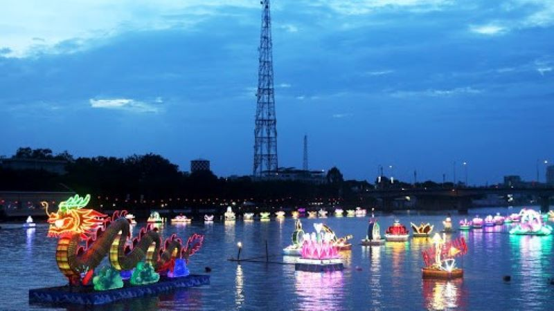

Ánh trăng, lời khấn nguyện, những chiếc đèn nước và không khí sum vầy làm nên một đêm hội vừa huyền ảo vừa ấm áp, nơi tín ngưỡng hòa cùng vẻ đẹp cộng đồng rất đậm chất Khmer Nam Bộ.
Oóc Om Bóc là một trong những lễ hội quan trọng của người Khmer Nam Bộ, gắn với nghi thức cúng trăng và lòng biết ơn thiên nhiên sau mùa vụ. Chính yếu tố tâm linh này khiến lễ hội có chất thơ và độ sâu cảm xúc rất riêng.
Điều khiến du khách dễ rung động không chỉ là hình ảnh lung linh, mà còn là cảm giác sum họp và niềm tin bình dị được gửi vào từng nghi thức. Đây là kiểu lễ hội càng xem kỹ càng thấy đẹp.

Ánh sáng dịu và không gian mở làm lễ hội có vẻ đẹp vừa thiêng vừa lãng mạn.
Phần cúng trăng chứa nhiều lớp biểu tượng về lòng biết ơn và ước nguyện.
Những điểm sáng trôi trên nước luôn là phần khiến du khách nhớ lâu nhất.
Lễ hội không náo nhiệt theo kiểu ồn ã, mà lôi cuốn bằng vẻ đẹp tinh tế của ánh sáng, nghi thức và niềm tin cộng đồng. Đây là một dạng trải nghiệm văn hóa rất đáng để cảm chậm.
Mọi cảm xúc của lễ hội đều xoay quanh bầu trời đêm và lời cầu mong mùa màng tốt lành.
Sự lung linh không chỉ đẹp để nhìn mà còn làm tăng cảm giác linh thiêng.
Không khí đoàn tụ và chia sẻ khiến lễ hội vừa trang trọng vừa ấm áp.
Hãy bắt đầu từ lúc chiều xuống và ở lại đến tối để cảm được trọn vẹn sự chuyển đổi của không gian lễ hội.
Đây là lúc dễ quan sát tổng thể và chọn vị trí xem đẹp nhất.
Khoảng lặng trước giờ lễ giúp bạn hiểu hơn về không khí trang nghiêm của buổi cúng.
Đây là thời điểm lễ hội thật sự bừng lên vẻ đẹp riêng của mình.
Những phút cuối thường cho cảm giác lắng và đẹp hơn mong đợi.
Nếu bạn thấy website hữu ích, hãy ủng hộ một ly cà phê để nhóm có thêm động lực phát triển.
 Quét mã QR hoặc nhấn vào ảnh để ủng hộ.
Quét mã QR hoặc nhấn vào ảnh để ủng hộ.
Đánh giá từ du khách
Hãy chia sẻ cảm nhận của bạn về vẻ đẹp đêm lễ và nghi thức Oóc Om Bóc nhé.